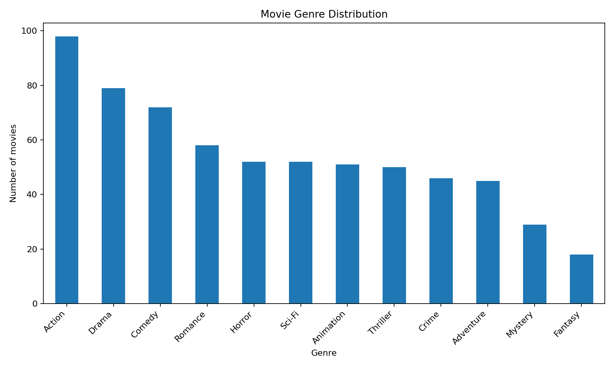
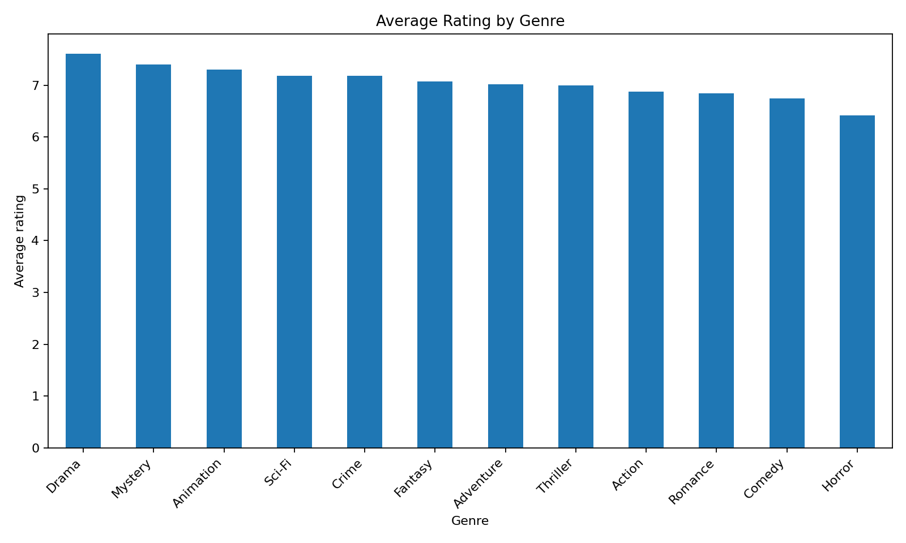
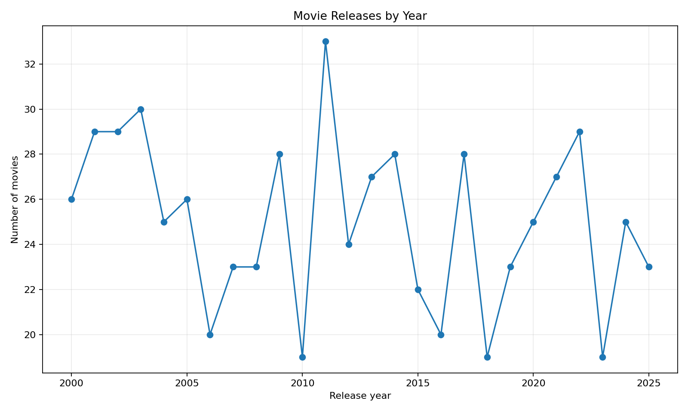
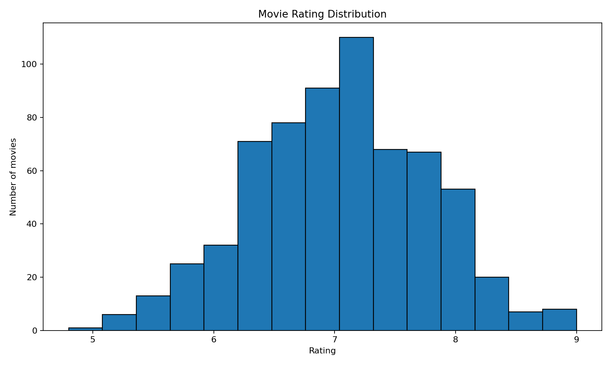
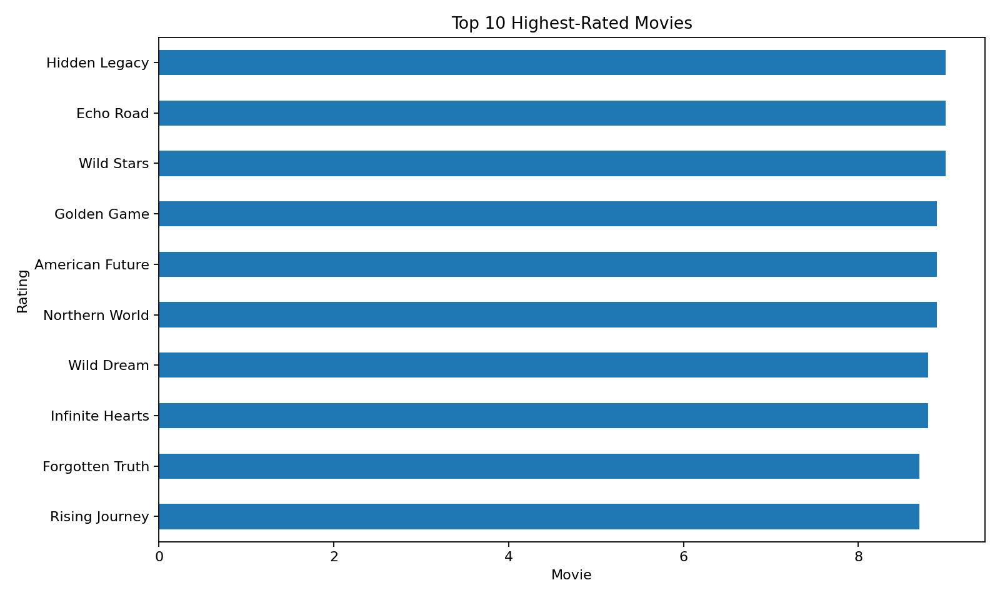
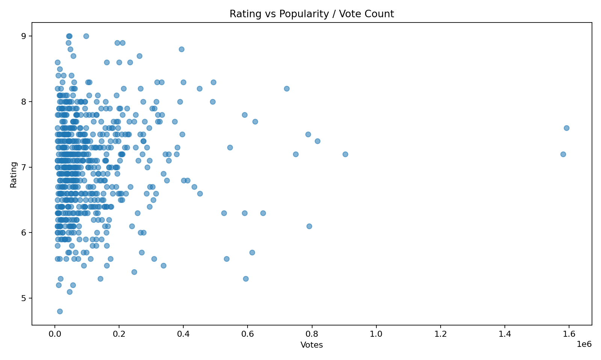

Task 6 – Python Visualization
Visual Report based on 650 movie records
This project analyzes a movie ratings dataset containing 650 movies using Python. The analysis explores movie genres, ratings, release years, and popularity through data visualization.
Tools: Python, Pandas, Matplotlib, Seaborn, and Jupyter Notebook
This chart shows the number of movies belonging to each genre and helps identify the most represented genres in the dataset.

This visualization compares the average rating across different movie genres.

This chart shows how the number of movies varies across different release years.

This histogram shows how movie ratings are distributed across the dataset.

This visualization displays the ten movies with the highest ratings in the dataset.

This scatter plot explores the relationship between the number of votes and movie ratings.

Python visualization provides an effective way to identify patterns and trends in movie data. The analysis combines Pandas for data preparation with Matplotlib and Seaborn for visual exploration.